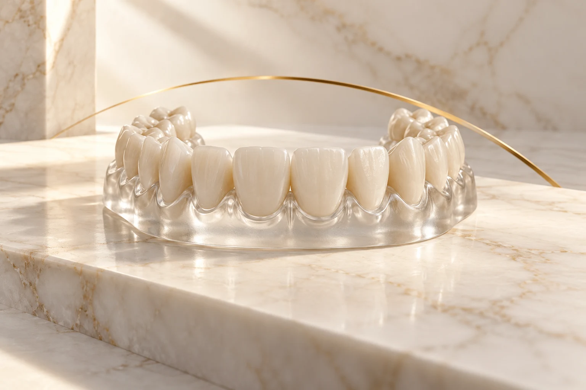

Olhar para a posição dos dentes
A ortodontia trata do posicionamento dos dentes e da relação entre as arcadas. O planejamento depende de avaliação e pode envolver registros, como radiografias, fotografias ou escaneamentos, conforme a necessidade.
O tipo de aparelho e a duração não podem ser definidos pelo site. Converse com o consultório sobre as modalidades disponíveis e a indicação para o seu caso.
Informação educativa: NHS — aparelhos ortodônticos (abre em nova aba). O conteúdo não define uma indicação individual nem o protocolo do consultório.
O que esclarecer sobre o acompanhamento
Para se organizar, pergunte quais registros serão necessários, como funcionam as consultas de acompanhamento e quais cuidados deverão integrar sua rotina.
Depois da movimentação dos dentes, o uso de contenção pode fazer parte do cuidado. O profissional responsável define a orientação e o tempo de uso.
- Qual é o objetivo do planejamento?
- Como será acompanhada a evolução?
- Quais são as condições e os custos de manutenção?